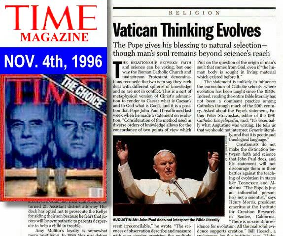

Pope John Paul II, on the 23rd of October, 1996, while speaking to the Pontifical Academy of Sciences plenary session at the Vatican, declared the evolutionary theories of Charles Darwin to be fact, tacitly acknowledging that man evolved from the apes, and reducing the biblical account of Genesis to that of mere fable!
|
The
Full Text of John Paul II's comments on evolution online at New Advent, a Roman Catholic web page. (Note that my comments below are keyed to the original official Vatican press release shown above, not this apparently complete translation of the Pope's remarks, which were delivered in French.)
I will address just a few key quotes of John Paul II that were mentioned in the above October 23rd, 1996 Vatican Information Service press release, (article N.182).
To begin with, in the second paragraph, two sources of "truth" are mentioned, one being the conclusions of modern science, and the other being Revelation of truth from scripture or the church. The Pope stated that
"We know in effect that the truth cannot contradict the truth."
(This is a quote from  PROVIDENTISSIMUS DEUS,
Paragraph 23).
PROVIDENTISSIMUS DEUS,
Paragraph 23).
What the Pope has done, as you will see, is elevate Darwinian evolutionary theory to that of undeniable scientific fact, or truth. He then draws the conclusion that since evolution is indeed the truth, the Catholic Church's interpretation of the biblical account of Genesis cannot contradict this now proven and accepted fact of evolution, and so church teachings must consequently be re-evaluated and amended. The Catholic church has faced this sort of predicament before.
The Pope probably sees parallels between Darwin's theory and the astronomical discoveries of Galileo. In 1632, as a result of his scientific observations, Galileo published a book in which he defended the Copernican theory of a sun-centered solar system. Galileo's "Dialogue on the Great World Systems" was swiftly condemned by Pope Urban VIII, because the church believed and taught that the earth was the center of the universe. Galileo was made to recant his heretical opinions and his book was banned by the church for two-hundred years. It is a classic example of church dogma suppressing scientific truth.
Here is a Catholic view of  The Galileo Affair
online at EWTN.
The Galileo Affair
online at EWTN.
Recently (1979) the Pontifical Academy of Sciences reconsidered the Galileo matter, with Pope John Paul II then acknowledging that the church erred in it's condemning the factual astronomical discoveries of Galileo. So the Pope probably saw a similar fiasco brewing between biblical creationism and evolutionary science. While the astronomical sciences have proved beyond a shadow of a doubt that the earth does indeed revolve around the Sun, the case for evolutionary science has never been proven to be anything but hypothesis, which is to say it is nothing more than speculation. The cases are really quite different, but apparently that is not the opinion of John Paul II.
In the 5th paragraph of the Vatican press release, the Pope points out-
"the need for a correct interpretation of the inspired word, of a rigorous hermeneutics. It is fitting to set forth well the limits of the meaning proper to scripture, rejecting undue interpretations which make it say what it does not have the intention of saying."
The Pope is saying that he is abandoning what he feels is an untenable and "undue" interpretation of the Bible, namely that God created the entire universe, to include man, in a mere 6 days, and he is adopting instead the process of Darwinian evolution which proposes man evolved over millions of years from the apes.
Note with care what is stated in the 6th paragraph of the Vatican press release. Pope John Paul II says-
" new knowledge leads us to recognize in the theory of evolution more than a hypothesis."
Either evolution is theory (hypothesis) or it is fact, there is no middle ground with respect to the origin of man. Either God created man directly from the dust of the earth or He didn't. It is just that simple. The Pope in the above sentence has just declared evolution to be a fact, and in the process he dismissed the biblical account of Genesis as fable.
In the 6th paragraph of the above Vatican press release, an encyclical from Pope Pius XII, HUMANI GENERIS, is summarized and appealed to for support by John Paul II -
"Humani Generis'," he stated, "considered the doctrine of 'evolutionism' as a serious hypothesis, worthy of a more deeply studied investigation and reflection on a par with the opposite hypothesis." (He is commenting on paragraph 36 of the encyclical)
In this summary of Humani Generis, John Paul II has just reduced the biblical six day creation (the opposite hypothesis) to mere theory, and elevated evolutionary science to be on a par with it as an equal possibility to be considered! And that is indeed a correct assessment of what Pius XII said in his encyclical.
Continuing, in the 8th paragraph of the Vatican press release, John Paul II
now quotes the encyclical  HUMANI GENERIS
HUMANI GENERIS
"if the origin of the human body is sought in living matter which existed before it, the spiritual soul is directly created by God."
So, as Pius XII explains it, if man did evolve, the same is not true of the soul. That, he claims, God created directly and put into man. Man himself though, is presumed to have evolved from "pre-existing living matter", rather than being created by God in one day from the dust of the earth. What Pius XII meant by that is that man evolved from the apes in accord with Darwinian theory!
What a predicament!! What an embarrassment for Christianity! At a time when the Protestant church in America is fighting to re-introduce the teaching of creationism into the public schools, Pope John Paul II stuns the world and declares Darwin was right after all, and man has descended from the apes! He is dismissing Genesis as fable and actually accepting Darwin's Origin of the Species as fact! Absolutely amazing!
1 Tim 6:20 O Timothy, keep that which is committed to thy trust, avoiding profane and vain babblings, and oppositions of science falsely so called:
1 Tim 6:21 Which some professing have erred concerning the faith.
Should you wish to do some further investigating, here are the documents that are referred to by the Pope in his remarks. They are available online at -
 HUMANI GENERIS
- The Encyclical of Pope Pius XII Concerning Some False Opinions
Threatening to Undermine the Foundations of Catholic Doctrine, August 12,
1950.
HUMANI GENERIS
- The Encyclical of Pope Pius XII Concerning Some False Opinions
Threatening to Undermine the Foundations of Catholic Doctrine, August 12,
1950.
 GAUDIUM ET SPES
- The Pastoral Constitution On the Church in the Modern World, Promulgated
by His Holiness, Pope Paul VI on December 7, 1965.
GAUDIUM ET SPES
- The Pastoral Constitution On the Church in the Modern World, Promulgated
by His Holiness, Pope Paul VI on December 7, 1965.
 PROVIDENTISSIMUS DEUS
- Encyclical of Pope Leo XIII on the Study of Holy Scripture, November 18,
1893. (See paragraph #23 in particular)
PROVIDENTISSIMUS DEUS
- Encyclical of Pope Leo XIII on the Study of Holy Scripture, November 18,
1893. (See paragraph #23 in particular)
In addition, here is a tract called
 Adam, Eve and
Evolution online at Catholic Answers, that further explains the
Catholic acceptance of Darwinian evolution. Take special note of the 11th
paragraph:
Adam, Eve and
Evolution online at Catholic Answers, that further explains the
Catholic acceptance of Darwinian evolution. Take special note of the 11th
paragraph:
Concerning human evolution, the Church has a more definite teaching. It allows for the possibility that man's body developed from previous biological forms (under God's guidance), but it insists on the special creation of his soul.

 The complete article is available from Time Magazine.
The complete article is available from Time Magazine.
The Great Translation Debate
Something of a debate is swirling around what the Pope actually said, or meant to say.
The contested passage is quoted here-
Today, almost half a century after the publication of the encyclical, new knowledge has led to the recognition of the theory of evolution as more than a hypothesis. It is indeed remarkable that this theory has been progressively accepted by researchers, following a series of discoveries in various fields of knowledge. The convergence, neither sought nor fabricated, of the results of work that was conducted independently is in itself a significant argument in favor of this theory.
The debate is whether or not the Pope said "the theory of evolution as more than a hypothesis" or "the theory of evolution as more than one hypothesis". The original French text of the crucial sentence is presented at the New Advent site listed near the top for those who understand it. Some Catholics are scrambling to interpret the Pope's remarks to say that he was merely acknowledging multiple theories of evolution, hence the "more than one hypothesis". However, in context, the Pope is quite clear in his endorsement of evolution as fact. Let me repeat his statement with my notations-
Today, almost half a century after the publication of the encyclical, new knowledge has led to the recognition of the theory of evolution [singular theory] as more than a hypothesis. It is indeed remarkable that this theory [of evolution, singular theory] has been progressively accepted by researchers, following a series of discoveries in various fields of knowledge. The convergence, neither sought nor fabricated, of the results of work that was conducted independently is in itself a significant argument in favor of this theory [of evolution, singular theory].
The context of the paragraph clearly proposes that various fields of scientific knowledge are converging in support of Darwinian evolution as the mechanism of creation, and the Pope recognizes this convergence of scientific evidence to significantly favor evolution, such that he at least, no longer considers evolution to be just a hypothesis, but rather he accepts it to be fact.
See also-
 Evolution: What
the Pope Said by James Aiken, at Nazareth Resource Library.
Evolution: What
the Pope Said by James Aiken, at Nazareth Resource Library.
It would seem that Catholics would rather debate this among themselves, leaving the issue unresolved, rather than ask the Pope for clarification on the issue. Perhaps they feel it is better if he simply remains silent rather than explain and potentially exacerbate the problem by removing all doubt about what he really meant to say.
Pope Benedict XVI:
" ... My predecessors Pope Pius XII and Pope John Paul II noted that there is no opposition between faith’s understanding of creation and the evidence of the empirical sciences. ..."
Evolution appears to be a reality favored by many scientific proofs.
... Currently, I see in Germany, but also in the United States, a somewhat fierce debate raging between so-called "creationism" and evolutionism, presented as though they were mutually exclusive alternatives: those who believe in the Creator would not be able to conceive of evolution, and those who instead support evolution would have to exclude God. This antithesis is absurd because, on the one hand, there are so many scientific proofs in favour of evolution which appears to be a reality we can see and which enriches our knowledge of life and being as such. But on the other, the doctrine of evolution does not answer every query, especially the great philosophical question: where does everything come from? And how did everything start which ultimately led to man? I believe this is of the utmost importance. ...
Apparently most Roman Catholic schools have taught evolution pretty much as fact since Pope Pius XII's encyclical HUMANI GENERIS in 1950. I even have a Catholic acquaintance who confirms that he was taught evolution as fact by Jesuits while in a Catholic school, so to most Catholics the Pope's remarks probably come as no great surprise.
So can the Catholic accept evolution? Is it compatible with the Bible?
Could the Pope be right about evolution? Please continue on to my article
 Did God create
the world through Evolution?
Did God create
the world through Evolution?